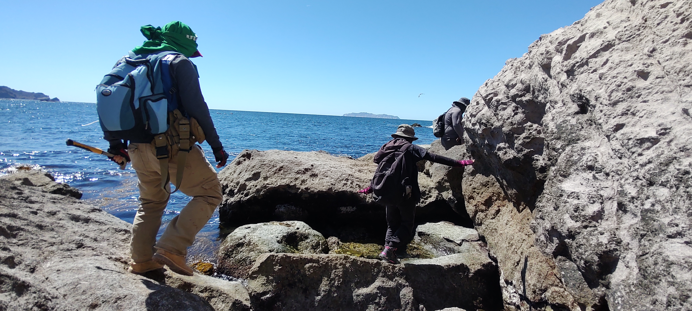

More about me
Geologist in the final stage of my Master's degree, with experience in research and specialization in structural analysis and geological mapping, both in the field and using digital tools. My work also integrates petrography and geochemistry. I am currently expanding my skills in programming and software development.
